캐시(cache)는 컴퓨터 과학에서 데이터나 값을 미리 복사해 놓는 임시 장소를 가리킨다.
캐시는 캐시의 접근 시간에 비해 원래 데이터를 접근하는 시간이 오래 걸리는 경우나 값을 다시 계산하는 시간을 절약하고 싶은 경우에 사용한다.
캐시에 데이터를 미리 복사해 놓으면 계산이나 접근 시간 없이 더 빠른 속도로 데이터에 접근할 수 있다.
브라우저에 캐시를 저장할 땐 헤더에 Cache-Control 속성을 통해 캐시가 유효한 시간을 지정할 수 있다.
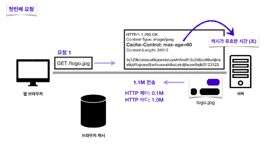
이 경우 60초로 설정한다면 60초 동안은 해당 캐시가 유효하다는 의미가 된다.
이렇게 되면 응답을 받았을 때 브라우저 캐시에 해당 응답 결과를 저장하며 이는 60초간 유효하다.
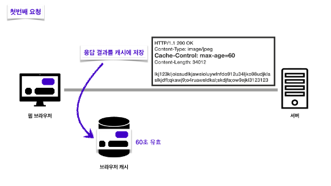
이제 두 번째 요청에선 캐시를 우선 조회하게 된다.
캐시가 존재하고 아직 유효한 캐시라면 해당 캐시에서 데이터를 가져온다.
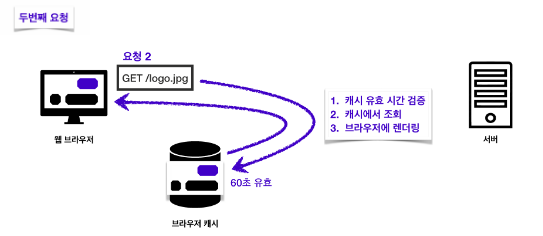
캐시의 유효시간이 초과한다면 다시 서버에 요청을 하고 유효한 응답 결과를 받는다.
이때 다시 네트워크 다운로드가 발생하게 된다.
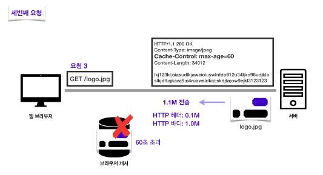
응답 결과를 브라우저가 렌더링 하면 브라우저 캐시는 기존 캐시를 지우고 새 캐시로 데이터를 업데이트한다.
이 과정에서 캐시 유효 시간이 다시 초기화 된다.
유효시간이 초과하면 다시 요청을 보내 새로운 데이터로 캐시를 업데이트하였다.
만약 캐시 유효시간이 지났지만 변경이 없기 때문에 해당 데이터를 써도 되는 상황이라면 이를 검증하고 사용하는 방법이 있다면 더 편리할 것이다.
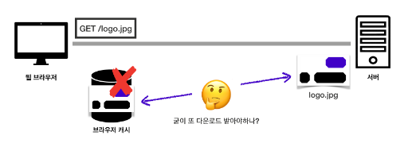
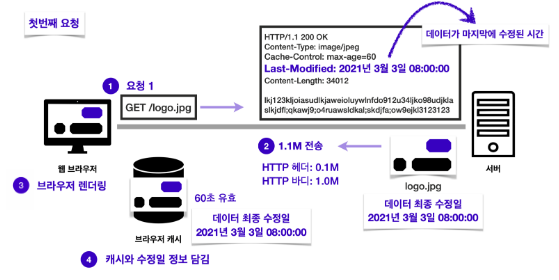
Last Modified는 데이터가 마지막으로 수정된 시간 정보를 헤더에 포함한다.
이로 인해 응답 결과를 캐시에 저장할 때 데이터 최종 수정일도 저장된다.
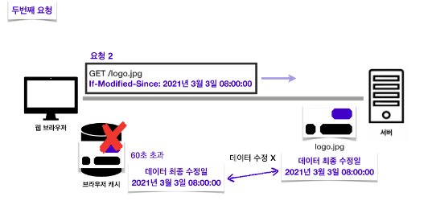
캐시 유효시간이 초과되더라도 If-Modified-Since 헤더를 이용해 조건부 요청을 할 수 있다.
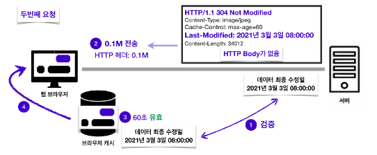
서버의 해당 자료의 최종 수정일과 비교해서 데이터가 수정이 안되었을 경우 응답 메시지에 이를 담아서 알려준다.
이때 HTTP Body는 응답 데이터에 없으며 상태 코드는 304 Not Modified로 변경된 것이 없다는 뜻이다.
클라이언트에서는 해당 응답을 받은 뒤 캐시를 갱신해 주고 다시 일정 시간 동안 유효하게 된다.
Last-Modified와 If-Modified-Since보다 좀 더 간단한 방식으로 ETag와 If-None-Match 검증 헤더가 있다.
서버에서 완전히 캐시를 컨트롤하고 싶은 경우 ETag를 사용할 수 있다.
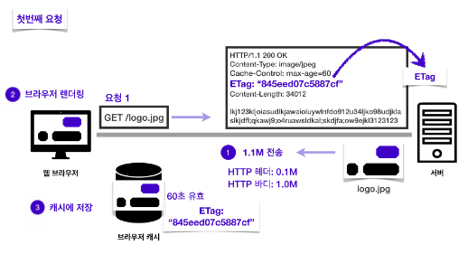
서버에서 헤더에 ETag를 작성해 응답하면 클라이언트의 캐시에서 해당 ETag 값을 저장한다.
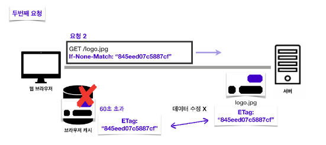
만약 캐시 시간이 초과돼서 다시 요청을 해야 하는 경우라면 이때 ETag 값을 검증하는 If-None-Match를 요청 헤더에 작성해서 보낸다.
서버에서 데이터가 변경되지 않았을 경우 ETag는 동일하기에 If-None-Match는 거짓이 된다.
이 경우 서버에서는 304 Not Modified를 응답하며 이때 역시 HTTP Body는 없다.
브라우저 캐시에서는 응답 결과를 재사용하고 헤더 데이터를 갱신한다.
프록시란 클라이언트와 서버 사이에 대리로 통신을 수행하는 것을 가리키며 그 중계 기능을 하는 서버를 프록시 서버라고 한다.
클라이언트 혹은 서버가 다른 네트워크에 간접적으로 접속할 수 있기 때문에 보안, 캐싱을 통한 성능, 트래픽 분산 등의 장점을 가진다.
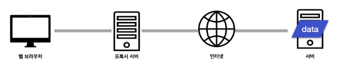
한국에 있는 클라이언트에서 특정 데이터가 필요한 상황인데 해당 데이터의 원 서버가 미국에 있다고 가정해 본다.
한국에서 미국까지 직접 접근하여 이미지를 가져오는데 0.5초가량 걸린다고 하면 한국에 있는 클라이언트는 모두 0.5초가량을 기다려야 해당 이미지를 받을 수 있다.
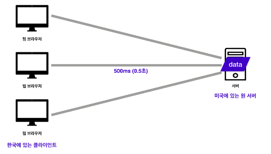
위 예시는 매우 긍정적인 상황이고 실제로는 더 많은 시간이 걸릴 수 있다.
하지만 우리는 유튜브와 같은 해외 사이트에서 위와 같은 불편함 없이 빠르게 영상을 시청할 수 있다.
이는 클라이언트와 원 서버 사이에 위치한 프록시 캐시 서버를 도입하였기 때문이다.
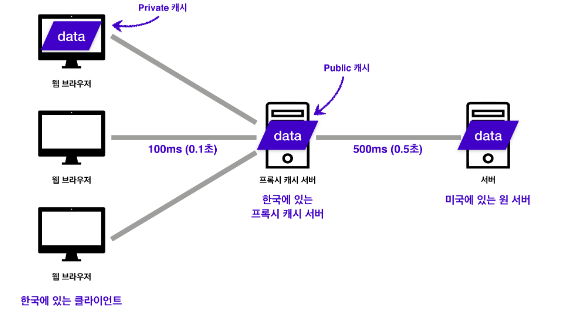
한국에 프록시 캐시서버를 두고 한국의 클라이언트는 프록시 캐시서버를 통해 자료를 가져오도록 하면 여러 사람이 찾은 자료일수록 이미 캐시에 등록되어 있기에 빠른 속도로 자료를 가져올 수 있다.
이는 같은 국내에 있기에 원서버에 접근하는 것보다 훨씬 빠른 속도에 자료를 가져올 수 있기 때문이다.
이때 클라이언트에서 사용하고 저장하는 캐시를 private 캐시라 하며 프록시 캐시 서버의 캐시를 public 캐시라 한다.